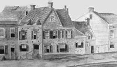
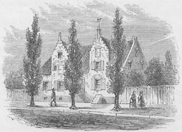
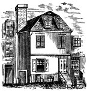
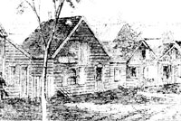
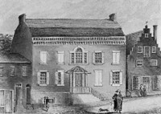

|
by Stefan Bielinski Shelter was of immediate and constant concern for the people of colonial Albany. From the earliest days, house building and renovation were ongoing and followed practical needs. After the initial framing and roofing, early Albany homes underwent constant adaptation and enlargement. Beginning during the 1640s, mostly wooden, hastily erected cottages housed new fur traders as they came together along the riverfront - north of Fort Orange. By the time of the English takeover in 1664 (and a name change from Beverwyck to Albany), a wooden stockade enclosed what had become a community of interest that may have included a hundred permanent if not particularly distinguished buildings. These small structures were sited on narrow, water level houselots and fronted along Albany's two main streets.  By the 1670s, Philip Pieterse Schuyler and other successful Albany traders were building more substantial brick homes on those same choice locations and farther up the hill to house growing families and business operations as well. Still small by modern standards, gabled, brick townhouses were erected in Albany through succeeding generations. These were roughly styled on European urban models. As time passed, these structures were enlarged, altered, and were passed through early Albany families - often for several generations. Some of those classic buildings survived into the late nineteenth century - a testimony to their durability if not their viability. For the next 150 years, traditional and newly anointed Albany leaders continued to replace and reconfigure urban homesteads on the same lots along the main streets of the city's core. However, as Albany grew from about 180 buildings in 1700, to more than 330 in 1756, and upwards of 600 in 1779, most of the new structures were somewhat less distinguished, mostly wooden, and erected on Albany's back streets or along the outlying extensions of Market, State, and Pearl streets. These smaller buildings filled in vacant lots within the stockaded city and were erected by younger sons of traditional families, discharged garrison soldiers, and some individual newcomers who could contribute useful talents to an expanding and evolving community. These more ordinary buildings were clustered around the inns at the intersection of Green and Beaver Streets, along Pearl Street, and on the waterfront. By the end of the last French and Indian War in 1763, newcomers from Europe and the other American colonies began to replace traditional families on city rolls. For the first time, the city's population included a large and growing group of new people. Most of these new Albanians were of modest means and some of them rented, bought, or married into an existing city house. Others became boarders or lodged at the inns that sprang up on virtually every street. Needing more space, still others erected new homes beyond the old urban core. On the eve of the American Revolution, the community had spread out along the river from beyond Foxes Creek to the Beaverkill, on the high ground beyond the fort, and along the Schenectady road. With the building of the city docks, dismantling of the stockade, and a dramatic influx of new people, Albany had become an early American city. At the same time, State, Market, and Court Streets were undergoing redevelopment. Beginning with the new city hall erected during the 1740s, new core buildings were wider than their predecessors - enveloping two or more houselots, were block shaped, and reached up another floor accommodate combined business, production, and residential functions. For the first time, some new and old buildings were used exclusively as stores, shops, and storehouses. This separation of home and workplace became more pronounced as a number of Albany people including one-time mayor Volkert P. Douw who crossed the river from his home at Wolvenhook to the family store on Court Street or blacksmith Christopher J. Yates, whose smithy and stables were in the Third Ward and his home and farmhouse in Rensselaerswyck. With the coming of peace in 1783, Albany became an American boomtown as New Englanders and Europeans flooded into New York on their way to new homes in the West. Some of these newcomers settled in Albany and provided energy and resources for the growth and development of a new city that became the permanent capital of New York State in 1797. By that time, Albany's population had reached almost 6,000 and the city was in the midst of a building boom that would provide homes and jobs for a population that would reach 9,356 by 1810 and more than 24,000 by 1830. notes
Wooden homes on the West side of North Pearl
Street between Fox Street and the new Dutch Church. Detail from a larger
work as remembered by James Eights for
the early nineteenth century. Colonial Albany Project Graphics
Archive.
West side of North Pearl
Street as it appeared in 1805 showing some popular early Albany
house types. Adapted from a print of a watercolor painted by James
Eights about 1850. Collection of the New
York State Museum.
The stately structure on the far left was built by Dr.
Hunlock Woodruff on the northwest corner of Maiden
Lane after his marriage to Maria Lansing in 1779. Woodruff saw patients
in the small, frame buildings to the right. James Eights grew up in the
adjoining stepgabled house whose main floor was elevated to protect against
flooding. Eights remembered Richard Thompson
(note the name plate over the door), an Afro Albanian grocer living on
the other side. The tall, elevated building north of Thompson’s was the
Groesbeck family home. But Eights
would have remembered its 19th century occupant - Widow Sturdivant. The
yellow brick home on the right was built for Dr.
Christopher C. Yates.
Engraving of the home of Robert
Yates on upper State Street. Later, his son, John Van Ness Yates,
occupied the dwelling at 110 State Street (on the South side facing St.
Peters church) which sat on a twenty-four-by-eighteen-foot lot. It
was demolished in 1855. See Albany Architecture,
51. The engraving was printed in the Bicentennial
History of Albany, 674.
Georgian home built by/for John Stevenson during the 1770s or 80s at what was then 92 State Street. At 74 feet on the street, it was almost three times as wide as its adjoining neighbors. Unlike the gabel-facing State Street buildings, what James Eights later would title it "a rich man's dwelling," the Stevenson house was oriented is what today would be called "ranch style." Home | Site Index | Navigation | Email | New York State Museum first posted 1999; recast and revised 8/16/16 |
{kind=link}
{kind=link}